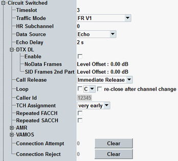

The "Circuit Switched" parameters configure the traffic channel (TCH) for the circuit switched connection. The TCH occupies a fixed timeslot and carries data for the MS under test.
Below, the parameters at the highest level of the "Circuit Switched" section are described.

Selects a traffic channel timeslot for the circuit switched connection.
Remote command:Selects the speech channel coding for circuit switched voice connections.
- FR V1: full-rate version 1 speech codec
- FR V2: full-rate version 2 speech codec
- HR V1: half-rate version 1 speech codec
- AMR-NB FR GMSK: full-rate narrowband adaptive multi-rate (AMR) codec with 4 modes and 8 data rates up to 12.2 kbit/s
- AMR-NB HR GMSK: half-rate narrowband AMR codec with 4 modes and 6 data rates up to 7.95 kbit/s
- AMR-NB HR 8PSK: half-rate narrowband AMR codec with 4 modes and 8 data rates up to 12.2 kbit/s
- AMR-WB FR GMSK: full-rate wideband AMR codec with 3 modes and 3 data rates up to 12.65 kbit/s
- AMR-WB FR 8PSK: full-rate wideband AMR codec with 4 modes and 5 data rates up to 23.85 kbit/s
- AMR-WB HR 8PSK: half-rate wideband AMR codec with 3 modes and 3 data rates up to 12.65 kbit/s
For configuration of AMR modes, see "AMR Configuration".
Remote command:Selects the subchannel to be used for half-rate coding (see "Traffic Mode").
Only half of the TDMA frames are used for a connection with half-rate coding, so that two subchannels numbered 0 and 1 are available. The physical channel characteristics of the half-rate channels and the TDMA frame mapping are described in 3GPP TS 45.002, clause 7, table 1. See also the TCH/H channel description in 3GPP TS 44.018.
Option R&S CMW-KS210 is required.
Remote command:Selects the data which the R&S CMW transmits on its DL traffic channel.
The "Echo" and "Speech" setting are appropriate for audio tests; the pseudo random bit sequences (PRBS) are appropriate for receiver quality measurements. The PRBS data are fully channel coded (including bit swapping and interleaving).
When a BER CS measurement is turned on, this parameter is configured automatically and grayed out. See also "BER CS Measurement"
- Echo:
Loopback with delay: All UL speech data received from the mobile is sent back after a configurable "Echo Delay". If the R&S CMW does not receive speech data in this operating mode, it automatically transmits a specific bit pattern to produce "silence" in the receiver of the mobile station.
This mode is suitable for a simple test of the connection: A word spoken into the microphone of the mobile is returned after a short while.
The mode is incompatible with an enabled test loop. - PRBS 2E9-1, PRBS 2E11-1:
PRBS transmission according to CCITT (ITU-T) O.153 - PRBS 2E15-1:
PRBS transmission according to CCITT (ITU-T) O.151 - PRBS 2E16-1:
Transmission of a pseudo random bit sequence defined by the polynomial: x16 + x5 + x3 + x2 + 1 - Speech:
Routing of an RF voice connection to a speech codec board (see "Audio Measurements"). This setting enables measurements performed by audio measurements application.
Defines the time that the R&S CMW waits before it loops back the received data. This parameter is only applicable if the "Data Source" = Echo.
Remote command:Configures the discontinuous transmission of the R&S CMW.
The specified power values are relative to the configured TCH/PDCH level, see "DL Reference Level". "NoData" frames denote DL frames, where no SID frames and no SACCH frames are sent. The level of the second part of SID frames is required for test case 3GPP 51.010-1, TC 21.1.4.2, step 64.
This parameter is only applicable if the "Data Source" ≠ Echo
Remote command:Specifies the signaling volume from the R&S CMW during the call release:
- Normal release: release according to the specification
- Immediate release: release with a reduced signaling
- Local end release: release without signaling
Activates/deactivates a test loop and selects the loop type. All test loops are defined in 3GPP TS 44.014. For an overview, see also "Test Loops".
When a BER CS measurement is turned on, the R&S CMW automatically sets this parameter to the required loop type, activates the loop and modifies the parameter display accordingly (grayed out values).
- A: TCH loop including signaling of erased frames
- B: TCH loop without signaling of erased frames
- C: TCH burst-by-burst loop
- D: TCH loop including signaling of erased frames and unreliable frames
- I: TCH loop for inband signaling
Some MSs open the loop when a TCH reconfiguration is performed, e.g. when the used frequency channel, timeslot or PCL is changed. If "Re-close after Channel Change" is selected, the R&S CMW automatically re-establishes the loop after TCH reconfiguration.
Option R&S CMW-KS210 is required for all loop types except A and C.
Remote command:Defines a 1 to 20-digit ID number for SMS and circuit switched calls. The caller ID is equal to the number digits (octets 4 etc.) of the "Calling party BCD number" described in 3GPP TS 24.008. Its purpose is to identify the origin of a call. The caller ID defined here is usually displayed at the mobile under test.
The number digit values are in the range 0 to 9, *, #, a, b, c. Each of the number digit values encodes a 4-bit number as described in the standard.
Number digit value | Bits |
|---|---|
0 | 0 0 0 0 |
1 | 0 0 0 1 |
2 | 0 0 1 0 |
3 | 0 0 1 1 |
4 | 0 1 0 0 |
5 | 0 1 0 1 |
6 | 0 1 1 0 |
7 | 0 1 1 1 |
8 | 1 0 0 0 |
9 | 1 0 0 1 |
* | 1 0 1 0 |
# | 1 0 1 1 |
a | 1 1 0 0 |
b | 1 1 0 1 |
c | 1 1 1 0 |
used as an endmark in the case of an odd number of number digits | 1 1 1 1 |
- "Very early": The TCH is assigned very early. Signaling is done via the fast associated control channel (FACCH).
- "Early": The TCH is assigned early, which means that alerting takes place on the TCH. For call setup to the traffic channel, signaling is done via the standalone dedicated control channel (SDCCH).
- "Late": The traffic channel is assigned late, which means after alerting. For call setup to the traffic channel and alerting, signaling is done via the SDCCH. This method is also known as off-air call setup (OACSU).
- Off: Each L2 frame is transmitted once. The usual L2 protocol is applied.
- On: Each L2 frame is transmitted twice. The purpose of repeated FACCH is to improve the robustness of FACCH signaling; its main application on the R&S CMW is the repeated FACCH frame error rate test described in "Mode FER FACCH".
Option R&S CMW-KS210 is required.
Remote command:- Off: Each SACCH frame is transmitted once.
- On: Each L2 frame is transmitted twice. The purpose of repeated SACCH is to improve the robustness of SACCH signaling; its main application on the R&S CMW is the repeated SACCH frame error rate test described in "Mode FER SACCH".
Option R&S CMW-KS210 is required.
Remote command:The description is covered in the next section, see "AMR Configuration".
The description is covered in the next section, see "VAMOS Configuration".
Counts the attempts and rejections of CS connections caused by activated "CM Service Request Reject Cause" or "IMSI Filter". Clear button resets the counters.
Remote command: